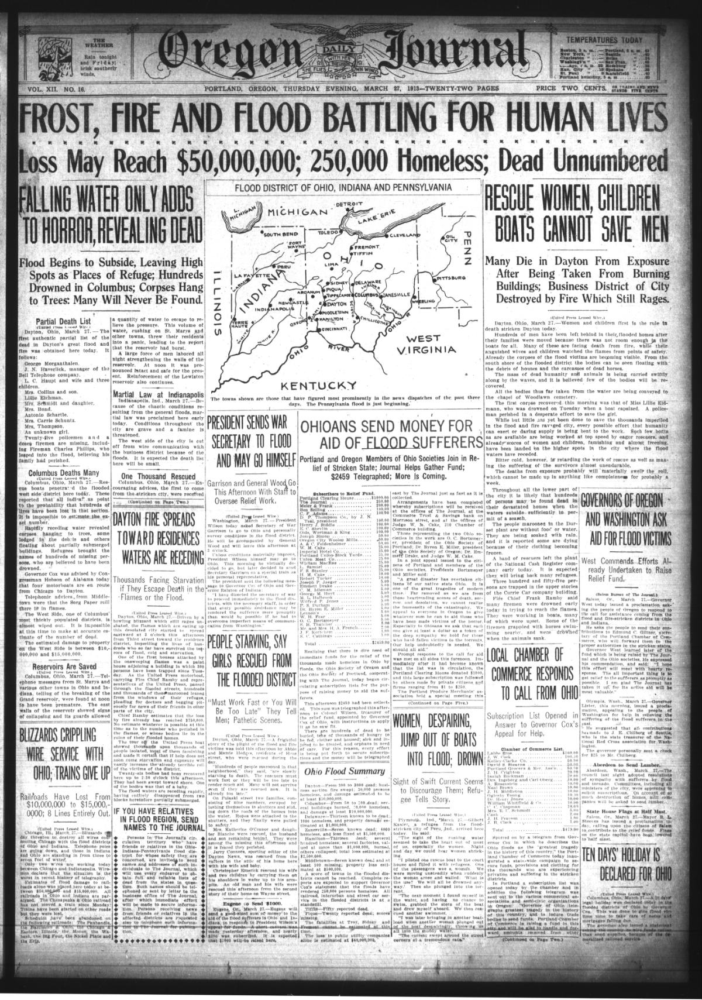
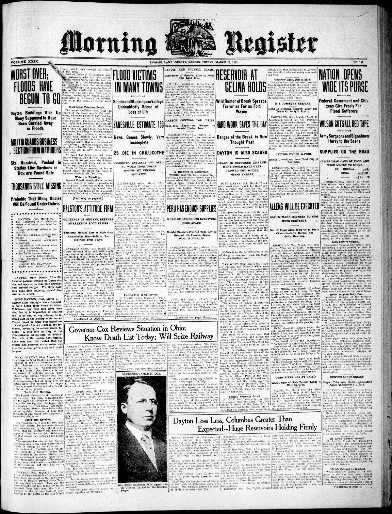

HN HN-385 · March 28, 1913 · Disasters, Accidents & Emergencies > Rescues, Evacuations & Emergency Response > Search and rescue
Source: Richmond Palladium (Daily), p. 1 — original page; Ohio History's Dayton assessment.
Report: Richmond residents and reporters traveled toward Dayton with automobile loads of food and reported firsthand on broken transport routes, people sheltering in buildings, water shortages, damaged electrical and gas services, and improvised boat rescues. The paper admitted casualty estimates still ranged from 1,000 to 5,000, even while giving specific descriptions of relief work.
Assessment: This is a follow-up to HN-384, not another flood. The firsthand relief details are more grounded than the hearsay death figures; the latter remained guesses. The eventual 361 recorded deaths should replace the inflated numbers when summarizing the disaster.
Authentic scans retrieved from Historic Oregon Newspapers (University of Oregon). Article crops are located using the archive's own ALTO OCR word coordinates and rendered at native crop resolution; page scans are 1,200-pixel-wide renditions. No images were generated, mocked, or retouched.


Not yet acquired. Queued for provider-specific acquisition testing (see source-acquisition manifest).
URL (preserved verbatim): https://newspapers.library.in.gov/?a=d&d=RPD19130328.1.1
Saved research report: Historical_Newspaper_Event_Research_378-402_2026-10-23.md
Evidence note: A newspaper report means a historical publication made a claim; it does not establish that claim as fact. Contemporary reporting is separated from later scholarly context and our own assessment.